1. 链表
约 2237 个字 223 行代码 20 张图片 预计阅读时间 10 分钟
1.1 题单
| 分类 | 题目 |
|---|---|
| 链表 - 反转系列 | 🟢 1.3.1 206. 反转链表 |
| 🟡 1.3.2 92. 反转链表 II | |
| 🔴 1.3.3 25. K 个一组翻转链表 | |
| 🟢 1.3.4 24. 两两交换链表中的节点 | |
| 🟡 1.3.5 445. 两数相加 II | |
| 🟡 1.3.6 2816. 翻倍以链表形式表示的数字 | |
| 链表 - 快慢指针 | 🟢 1.4.1 876. 链表的中间结点 |
| 🟡 1.4.2 141. 环形链表 | |
| 🔴 1.4.3 142. 环形链表 II | |
| 🟠 1.4.4 143. 重排链表 | |
| 🟢 1.4.5 234. 回文链表 | |
| 链表 - 删除系列 | 🟢 1.5.1 237. 删除链表中的节点 |
| 🟢 1.5.2 19. 删除链表的倒数第 N 个结点 | |
| 🟢 1.5.3 83. 删除排序链表中的重复元素 | |
| 🔴 1.5.4 82. 删除排序链表中的重复元素 II | |
| 🟢 1.5.5 203. 移除链表元素 | |
| 🟢 1.5.6 3217. 从链表中移除在数组中存在的节点 | |
| 🟢 1.5.7 2487. 从链表中移除节点 |
1.2 基础知识
哨兵结点：如果需要对链表的头结点进行操作（如删除），需要加入哨兵结点便于执行操作以及最后作为返回值．
1.3 反转系列
1.3.1 206. 反转链表
要反转链表，我们需要将当前结点指向上一个结点，因此要保存这两个结点；将当前结点指向上一个结点后会丢失后续的结点，因此要将后续的结点也存起来，需要三个指针．
过程
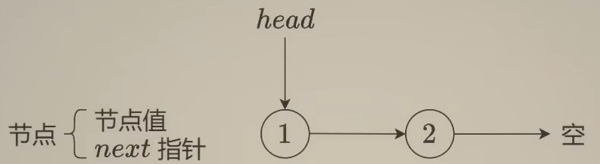
用cur指向需要修改的结点，pre指向上一结点，nxt储存下一结点．
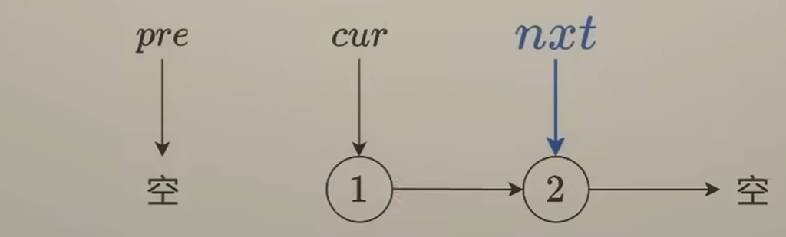
将cur指针反转．
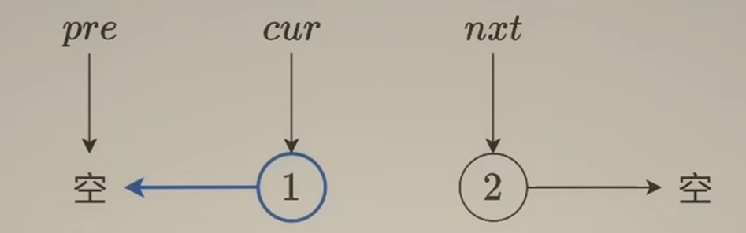
将pre指向当前结点cur．
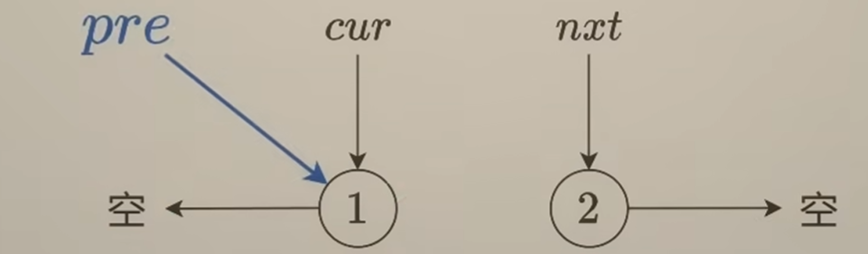
将cur指向下一结点nxt．
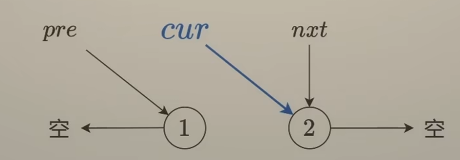
重复直到cur为空．
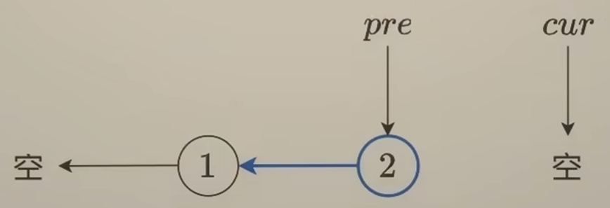
初始时cur指向head，pre作为cur的前驱指向nullptr，这样可以将head的next修改成nullptr；最后cur为空，pre指向新链表的头结点，返回pre．
时间复杂度 \(O(n)\)，空间复杂度 \(O(1)\)．
ListNode* reverseList(ListNode* head) {
ListNode* pre = nullptr, * cur = head, * nxt;
while (cur)
{
nxt = cur->next;
cur->next = pre;
pre = cur;
cur = nxt;
}
return pre;
}
1.3.2 92. 反转链表 II
过程
将2~4的链表反转．此时结点2指向nullptr，pre指向结点4，cur指向结点5．
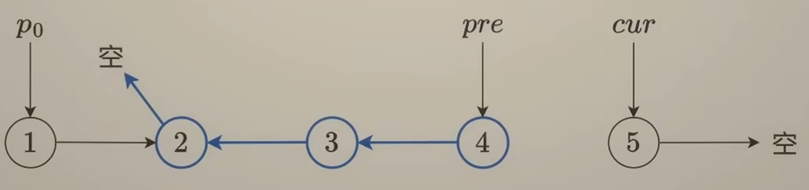
我们需要把结点2指向剩余的部分，即cur；把反转部分的上一个结点（记作p0）接到反转后的新头结点上，即pre．
结点2可以用 p0->next 表示．
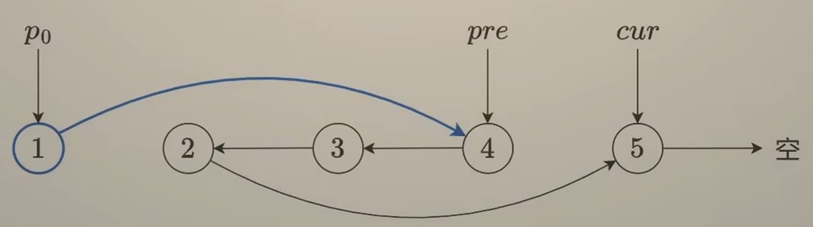
如果 left == 1 呢，p0应该是谁？我们可以加入一个哨兵结点，这样p0就存在了．
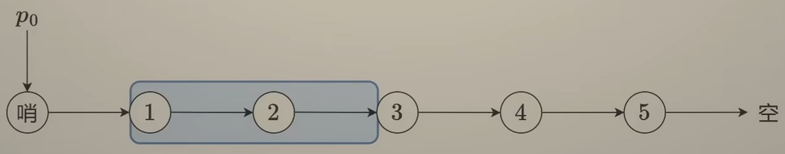
将p0从dummy开始右移left - 1 步，即可称为目标链表的前一个结点．
时间复杂度 \(O(n)\)，空间复杂度 \(O(1)\)．
ListNode* reverseBetween(ListNode* head, int left, int right) {
ListNode* dummy = new ListNode(-1, head), * p0 = dummy;
for (int i = 1; i < left; i++)
p0 = p0->next;
ListNode* pre = p0, * cur = p0->next, * nxt;
for (int i = 1; i <= right - left + 1; i++)
{
nxt = cur->next;
cur->next = pre;
pre = cur;
cur = nxt;
}
p0->next->next = cur;
p0->next = pre;
return dummy->next;
}
1.3.3 25. K 个一组翻转链表
大题思路与上一题类似，先遍历一遍链表得到长度算出要循环的次数．
对于每次循环：
过程
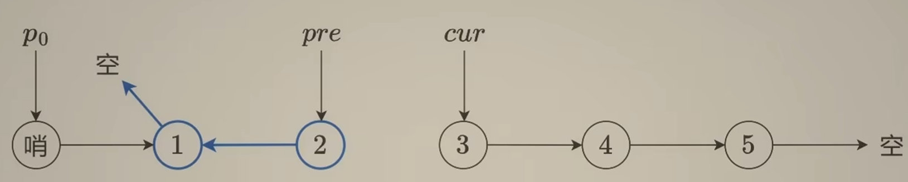
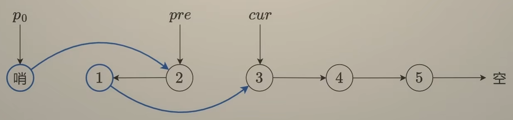
p0要成为下一组反转链表的前一个结点，也就是前一组反转链表反转后的尾结点、反转前的头结点，因此在对这一组反转后、修改前后结点前存下 p0->next，修改后将p0更新．
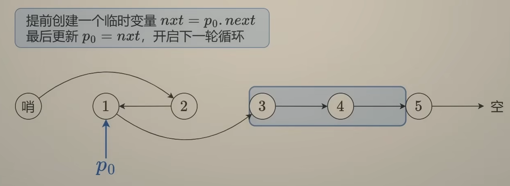
时间复杂度 \(O(n)\)，空间复杂度 \(O(1)\)．
ListNode* reverseKGroup(ListNode* head, int k) {
int len = 0;
for (ListNode* cnt = head; cnt; cnt = cnt->next)
len++;
ListNode* dummy = new ListNode(-1, head), * p0 = dummy;
ListNode* pre = nullptr, * cur = head, * nxt, * dnxt;
while (len >= k)
{
len -= k;
for (int i = 1; i <= k; i++)
{
nxt = cur->next;
cur->next = pre;
pre = cur;
cur = nxt;
}
dnxt = p0->next;
dnxt->next = cur;
p0->next = pre;
p0 = dnxt;
}
return dummy->next;
}
1.3.4 24. 两两交换链表中的节点
25题在 k = 2 时的特解，由于只有2，完全可以不用链表反转的模板而是直接模拟修改．参考灵茶山艾府的图解：
图解
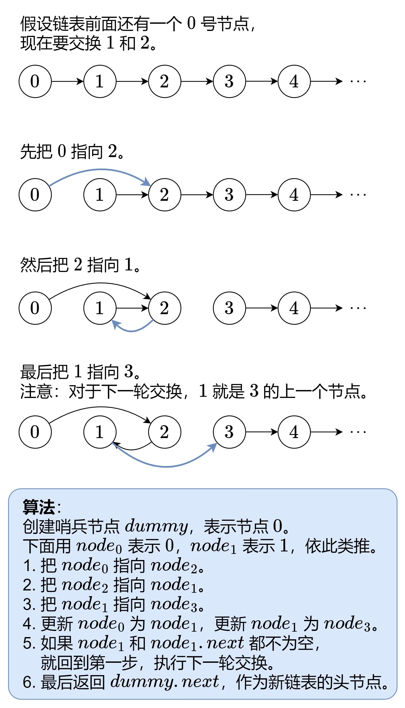
时间复杂度 \(O(n)\)，空间复杂度 \(O(1)\)．
ListNode* swapPairs(ListNode* head) {
ListNode* dummy = new ListNode(-1, head), * n0 = dummy;
while (n0->next && n0->next->next)
{
ListNode* n1 = n0->next, * n2 = n1->next, * n3 = n2->next;
n0->next = n2;
n2->next = n1;
n1->next = n3;
n0 = n1;
}
return dummy->next;
}
1.3.5 445. 两数相加 II
1.3.1 反转链表和两数相加的混合，先将两个链表反转后转化为两数相加问题，计算出答案后再次反转即可．
时间复杂度 \(O(n)\)，空间复杂度 \(O(n)\)，其中 \(n\) 为 \(l_1\) 长度和 \(l_2\) 长度的最大值。
ListNode* reverse(ListNode* head)
{
ListNode* pre = nullptr, * cur = head, * nxt;
while (cur)
{
nxt = cur->next;
cur->next = pre;
pre = cur;
cur = nxt;
}
return pre;
}
ListNode* addTwoNumbersReversely(ListNode* l1, ListNode* l2)
{
int carry = 0;
ListNode* dummy = new ListNode(-1), * cur = dummy;
while (l1 || l2)
{
if (l1)
{
carry += l1->val;
l1 = l1->next;
}
if (l2)
{
carry += l2->val;
l2 = l2->next;
}
cur->next = new ListNode(carry % 10);
cur = cur->next;
carry /= 10;
}
if (carry)
cur->next = new ListNode(carry);
return dummy->next;
}
ListNode* addTwoNumbers(ListNode* l1, ListNode* l2)
{
l1 = reverse(l1), l2 = reverse(l2);
return reverse(addTwoNumbersReversely(l1, l2));
}
1.3.6 2816. 翻倍以链表形式表示的数字
1.3.6.1 方法一
可看作是两数相加 II自身与自身相加．
1.3.6.2 方法二
利用2倍数的特殊性：当前位的进位只能为0或者1，且只和下一位有关；只有下一位 \(\ge5\) 时当前位才会进位．特别地，如果首位 \(\ge5\)，需要在当前链表前加入一个新的结点．
时间复杂度 \(O(n)\)，空间复杂度 \(O(1)\)（原地修改）．
ListNode* doubleIt(ListNode* head) {
if (!head)
return nullptr;
if (head->val >= 5)
head = new ListNode(0, head);
for (ListNode* cur = head; cur; cur = cur->next)
{
cur->val = cur->val * 2 % 10;
if (cur->next && cur->next->val >= 5)
cur->val += 1;
}
return head;
}
1.4 快慢指针
1.4.1 876. 链表的中间结点
通过快慢指针寻找中间结点：慢指针走一步，快指针走两步．当快指针指向空结点或其下一个结点为空结点时，慢指针指向中间结点．
证明
设 \(n=2k+1\)，由于快指针初始在头结点，因此在走 \(k\) 步后会到达第 \(2k+1\) 个结点即尾结点，此时慢指针到达第 \(k+1\) 个结点，因为 \(k+1=\dfrac{1}{2}(1+2k+1)\)，即为中间结点．
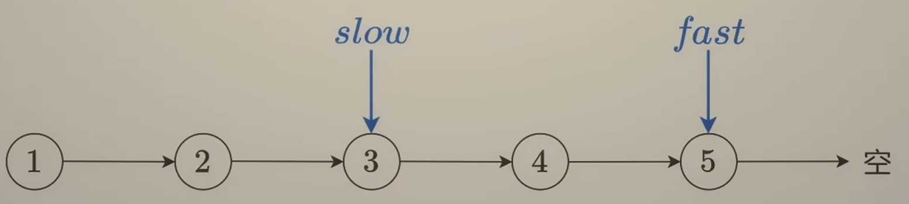
设 \(n=2k\)，快指针走 \(k\)步后会到达第 \(2k+1\) 个结点即空结点，此时慢指针到达第 \(k+1\) 个结点，因为 \(k+1=\lceil \dfrac{1}{2}(1+2k) \rceil\)，即为第二个中间结点．
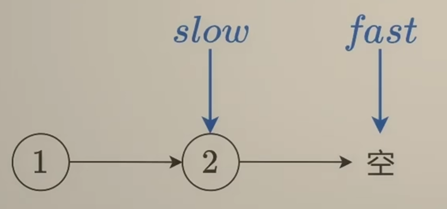
时间复杂度 \(O(n)\)，空间复杂度 \(O(1)\)．
ListNode* middleNode(ListNode* head) {
ListNode* slow = head, * fast = head;
while (fast && fast->next)
{
slow = slow->next;
fast = fast->next->next;
}
return slow;
}
1.4.2 141. 环形链表
同样的快慢指针，每一次快慢指针走完后判断两指针是否相等，若相等则返回 true．
时间复杂度 \(O(n)\)，空间复杂度 \(O(1)\)．
时间复杂度证明
不妨设共有 \(n\) 个结点，其中环内有 \(k\) 个结点． 最坏情况下，入环时快指针恰好位于慢指针前方，此时需要 \(k-1\) 步才能追上．因此慢指针在环内步数不超过 \(k-1\) 步，总共步数不超过 \(n-1\) 步，即 \(O(n)\)．
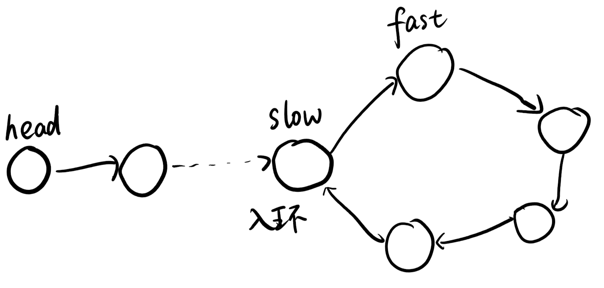
bool hasCycle(ListNode *head) {
ListNode* slow = head, * fast = head;
while (fast && fast->next)
{
slow = slow->next;
fast = fast->next->next;
if (slow == fast)
return true;
}
return false;
}
1.4.3 142. 环形链表 II
当快慢指针相遇后，让慢指针和头结点同时移动，二者相遇处即为入环点．
证明
Floyd 判圈算法
 \(kc−a\) 是从入环口开始的步数。因为 \((kc−a)+a=kc\)，所以从 \(kc−a\) 开始，再走 \(a\) 步，就可以走满 \(k\) 圈．
\(kc−a\) 是从入环口开始的步数。因为 \((kc−a)+a=kc\)，所以从 \(kc−a\) 开始，再走 \(a\) 步，就可以走满 \(k\) 圈．
时间复杂度 \(O(n)\)，空间复杂度 \(O(1)\)．
ListNode *detectCycle(ListNode *head) {
ListNode* slow = head, * fast = head;
while (fast && fast->next)
{
slow = slow->next;
fast = fast->next->next;
if (fast == slow)
{
while (slow != head)
{
slow = slow->next;
head = head->next;
}
return head;
}
}
return nullptr;
}
1.4.4 143. 重排链表
链表的顺序本质就是相向双指针，先放左指针元素再放右指针元素，然后指针向中间移动，重复直到所有结点均被排完．
我们可以通过1.4.1 链表的中间结点和1.3.1 反转链表，将中间点及以后的结点反转并得到右指针．
过程
通过取中间结点+反转得到两个朝中间结点的链表和双指针．
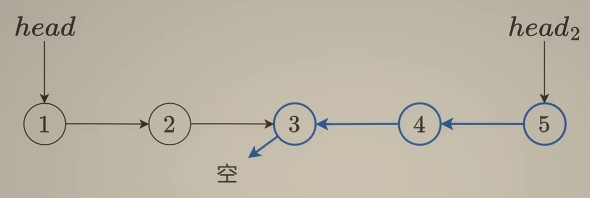
将 head1 指向 head2，head2 指向 head1->next．
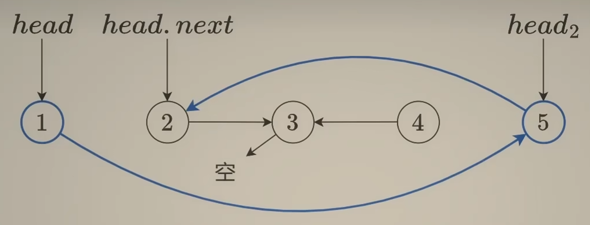
将 head1 移至 head1->next，head2 移至 head2->next．
由于前面会将 next 更新，因此要提前存下来．
当 head2 指向中间结点时，若长度为奇数则此时双指针均指向中间结点，可以结束；若长度为偶数则还剩中间结点和其前一结点，但其前一结点本来就指向中间结点，因此也可以结束．
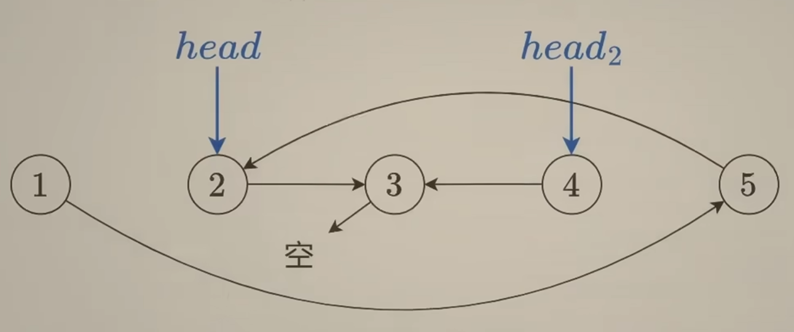
时间复杂度 \(O(n)\)，空间复杂度 \(O(1)\)．
ListNode* getMid(ListNode* head)
{
ListNode* slow = head, * fast = head;
while (fast && fast->next)
{
slow = slow->next;
fast = fast->next->next;
}
return slow;
}
ListNode* reverse(ListNode* head)
{
ListNode* pre = nullptr, * cur = head, * nxt;
while (cur)
{
nxt = cur->next;
cur->next = pre;
pre = cur;
cur = nxt;
}
return pre;
}
void reorderList(ListNode* head1) {
ListNode* mid = getMid(head1);
ListNode* head2 = reverse(mid);
while (head2 != mid)
{
ListNode* nxt1 = head1->next, * nxt2 = head2->next;
head1->next = head2;
head2->next = nxt1;
head1 = nxt1;
head2 = nxt2;
}
}
1.4.5 234. 回文链表
使用上题技巧用链表双指针即可．
1.5 删除系列
1.5.1 237. 删除链表中的节点
此题有点脑筋急转弯，该题特意为“删除”做了一堆阐释，就是为了告诉我们：这题的删除只要值删除了即可．由于要删除当前结点必须将该结点的上一结点的 next 指向该结点的下一结点，给我们当前结点无法正常删除，但是本题是值删除，只需要：将当前的值变成下一结点的值，再删除下一节点．
时间复杂度 \(O(1)\)，空间复杂度 \(O(1)\)．
void deleteNode(ListNode* node) {
node->val = node->next->val;
node->next = node->next->next;
}
1.5.2 19. 删除链表的倒数第 N 个结点
遍历一遍求出长度，再根据长度关系计算删除结点即可．
1.5.3 83. 删除排序链表中的重复元素
由于链表升序，对每一个结点判断：如果下一个结点存在且等于当前结点的值，就将下一结点删除；否则迭代到下一个结点．
时间复杂度 \(O(n)\)，空间复杂度 \(O(1)\)．
ListNode* deleteDuplicates(ListNode* head) {
ListNode* cur = head;
while (cur)
{
if (cur->next && cur->next->val == cur->val)
cur->next = cur->next->next;
else
cur = cur->next;
}
return head;
}
1.5.4 82. 删除排序链表中的重复元素 II
此题要用类似同向双指针的思路：若下一结点与下下结点均存在且值不同，将当前结点迭代到下一结点；若均存在且值相同，此时开始第二重循环：记录下这个相同的值，将为该值的结点全部删除．
ListNode* deleteDuplicates(ListNode* head) {
if (!head || !head->next) return head;
ListNode* dummy = new ListNode(-1, head), * cur = dummy;
while (cur->next && cur->next->next)
{
if (cur->next->val == cur->next->next->val)
{
int val = cur->next->val;
while (cur->next && cur->next->val == val)
cur->next = cur->next->next;
}
else
cur = cur->next;
}
return dummy->next;
}
1.5.5 203. 移除链表元素
与1.5.3 删除排序链表中的重复元素的不同点在于头结点可能会被删除，因此要创建一个哨兵结点．
1.5.6 3217. 从链表中移除在数组中存在的节点
创建一个Set存储数组里的数，如果下一个结点存在且位于Set中就删除下一个结点．
1.5.7 2487. 从链表中移除节点
将链表反转后用一个变量存储最大值，遍历链表：若小于最大值就删除结点，大于等于最大值就迭代到下一结点并更新最大值．